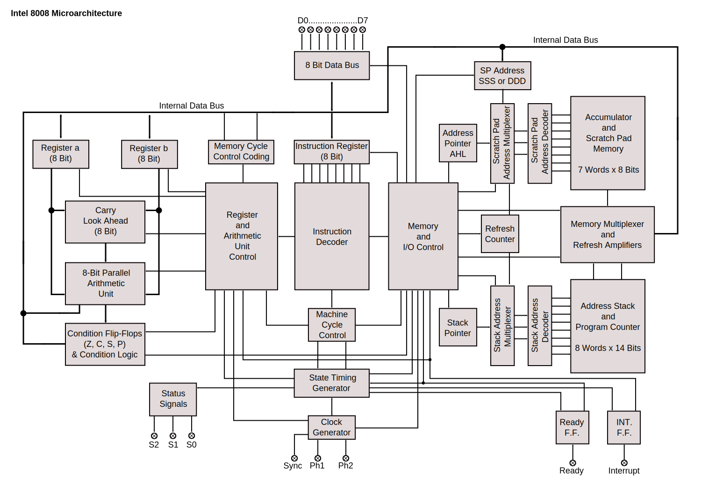
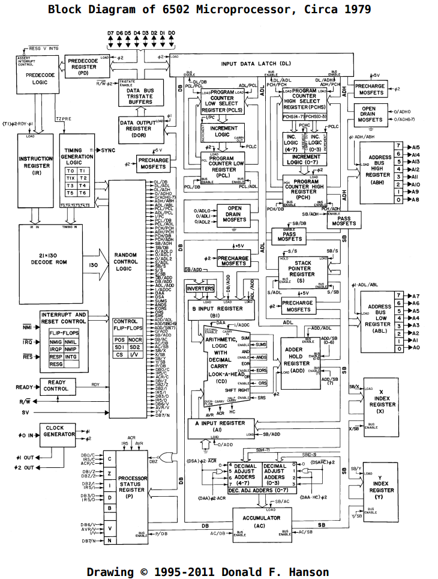
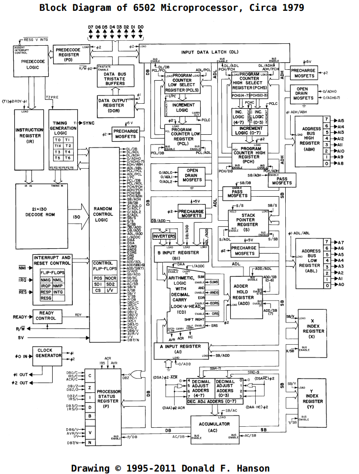
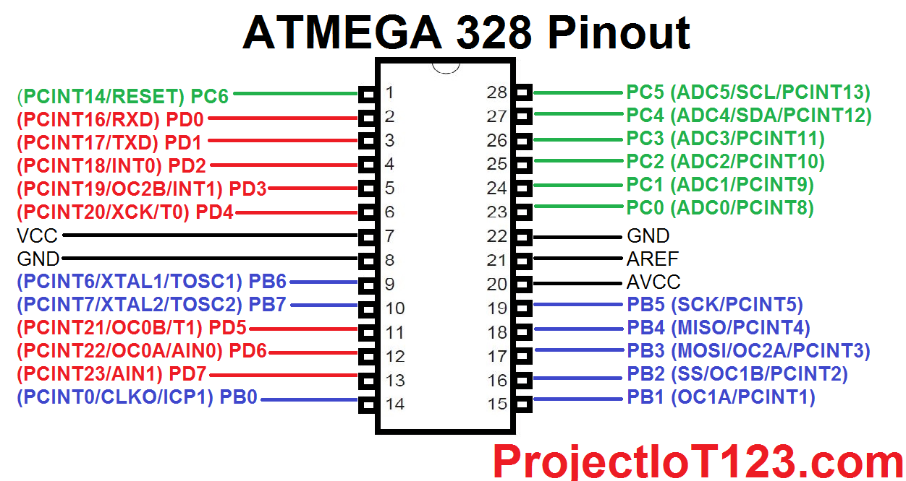
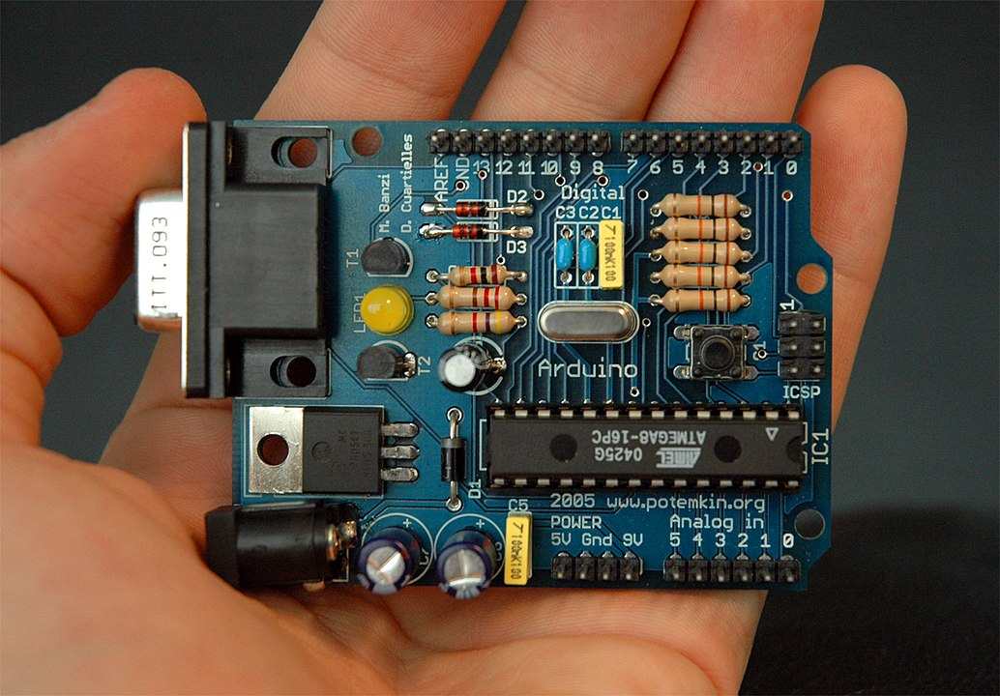
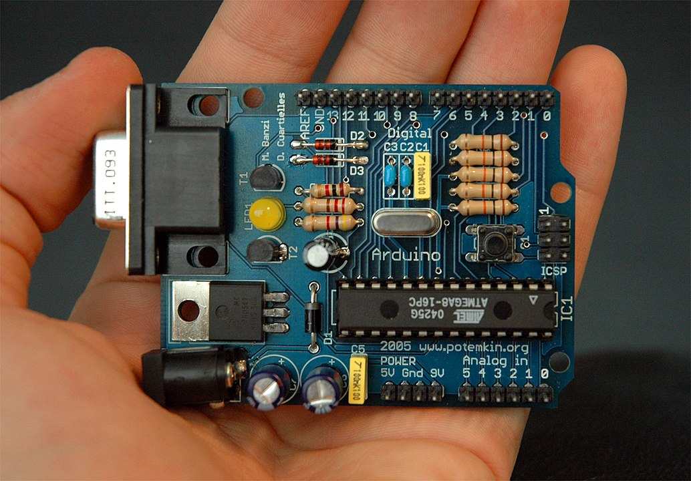

Computer
How does it work?
from microcomputer to microcontroller
Maciej Małecki, Capgemini IoT Community, Wrocław 2021.
Motivation

→

- © Maciej Małecki
- © Maciej Małecki
is this presentation
for me?
"microcomputer" ???


- https://commons.wikimedia.org/wiki/File:IBM_System360_Mainframe.jpg
- By Daderot - Own work, CC0, https://commons.wikimedia.org/w/index.php?curid=42413452
- By Tim Colegrove - Own work, CC BY-SA 4.0, https://commons.wikimedia.org/w/index.php?curid=79216985
{kind=link}
Altair 8800
MITS, 1975


- By Swtpc6800 en:User:Swtpc6800 Michael Holley - Transfered from en.wikipedia, Public Domain, https://commons.wikimedia.org/w/index.php?curid=3185062
- https://www.tempton.de/next-level/blog/bill-gates-der-moment-wenn-microsoft-die-kleinste-sorge-ist

https://s2js.com/altair/sim.html
Altair BASIC

By User:Swtpc6800 Swtpc6800 Michael Holley - Own work, Public Domain, https://commons.wikimedia.org/w/index.php?curid=2649301
microprocessor
early Intel


Roughly on what is the difference
Major compounds of CPU
- By Original uploader was LucaDetomi at it.wikipedia - Transfered from it.wikipedia, CC BY-SA 3.0, Link
- By Konstantin Lanzet - CPU Collection Konstantin LanzetCamera: Canon EOS 400D, CC BY-SA 4.0, Link
- By Konstantin Lanzet - CPU collectionCamera: Canon EOS 400D, CC BY-SA 3.0, Link
Intel 8008 Architecture

By Appaloosa - Own work, CC BY-SA 3.0, Link
Cheap microprocessors: 6502, Z80
Beyond microcontrollers
 

Microcontroller vs microprocessor

https://projectiot123.com/2019/10/24/atmega328-pinout-for-arduino/
KIM-1
MOS Technology, Inc., 1976
 

Apple
1976

By Achim Baqué - https://www.apple1registry.com/en/press.html, CC BY-SA 4.0, Link
KIM-1 vs AtMega 328p
8bits, 16bits, 64bits
Data bus width


Memory addressing
Address bus width
Stack
Architectures
- Harvard
- von Neumann
IO handling
- Motorola style vs Intel style
- IO ports
- Pull up registers
ALU
Code execution
- Machine code
- Machine instruction
- Instruction decoding
- Instruction counter
Interrupts
Sources
QA, QR code